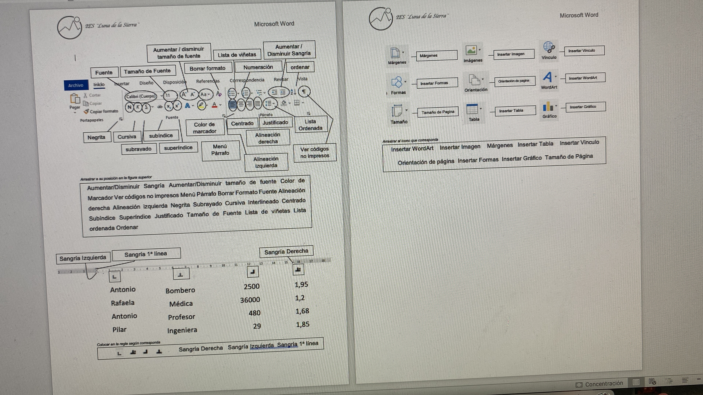

Tercer Semestre ᐢ-ᆺ-ᐢ
Gestión de Archivo de Texto
Procesamiento avanzado de documentos y estilos profesionales.

Hoja de Cálculo
Manipulación de datos numéricos y alfanuméricos mediante fórmulas complejas, funciones y gráficos estadísticos.

Cuarto Semestre ᐢ-ᆺ-ᐢ
Comunidades Virtuales
Análisis, creación e interacción en plataformas digitales, redes de colaboración y entornos web de socialización.

Mantenimiento y Redes de Cómputo
Soporte de hardware y configuración de arquitecturas de redes locales.

Quinto Semestre ᐢ-ᆺ-ᐢ
Sistemas de Información
Modelado, diseño y gestión de bases de datos relacionales estructuradas para resolver necesidades organizacionales.

Programación
Desarrollo de lógica algorítmica, codificación en lenguajes estructurados y resolución de problemas por bloques de código.
 6.23.36 p.m..png )
Sexto Semestre ᐢ-ᆺ-ᐢ
Páginas Web
Maquetación web interactiva utilizando lenguajes de marcado y hojas de estilo estandarizadas para entornos modernos.
 11.15.05 p.m..png)
Diseño Digital
Manipulación, edición de mapas de bits, vectores y elementos multimedia visuales orientados a la comunicación digital.
 3.26.41 p.m..png)